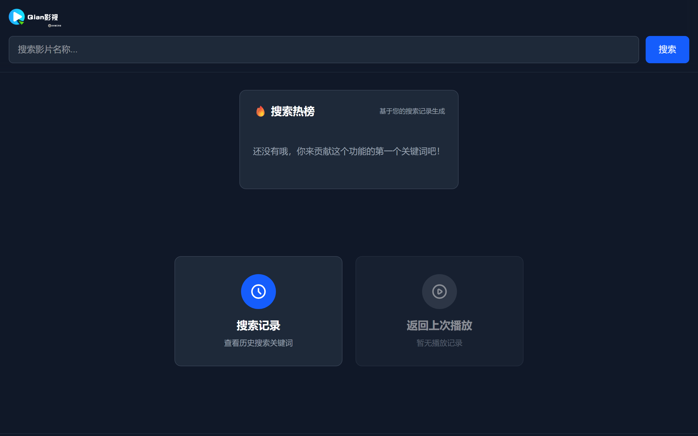
工作室介绍
秉持极简设计理念，把复杂的功能简化，以最直观的方式呈现给用户。
我们的理念
秉持极简设计理念，将复杂的功能简化，以最直观的方式呈现给用户。
核心优势
专注于免费、高效与便捷体验，持续为用户提供稳定可靠的实用工具。
已出成果
Qian影视、Qian云盘及多款小工具，覆盖用户日常娱乐与工作需求。
“只有自己成为用户，才能更好地服务用户。”
白小谦工作室专注于简洁、实用、轻量化的互联网产品开发。我们深信，优秀的产品应当是无形的，让用户无需学习即可上手。团队由一群热爱创造、追求极致的年轻人组成，不断探索新的技术和方法，只为给用户带来更好的体验。
精选项目
效果以实际为准。点击卡片即可体验。
没有找到匹配「」的项目。
Qian 系列
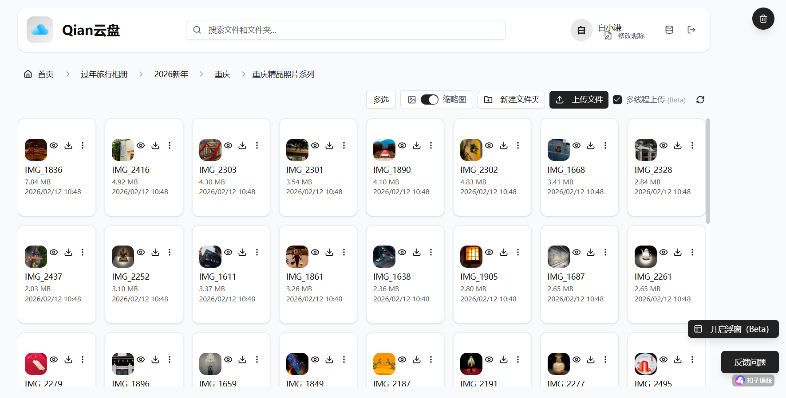
已停服
Qian云盘
基于火山云储存制作的，免费、无限空间云盘，且是全球首个可在浏览器端实现多线程上传的云盘。
已停服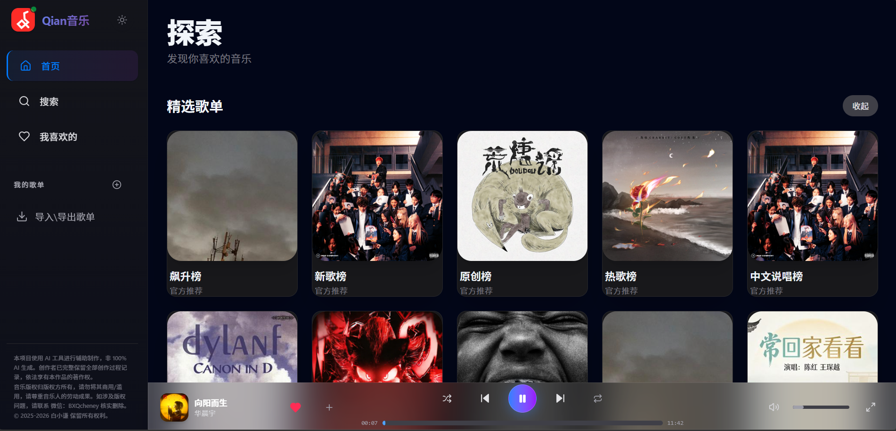
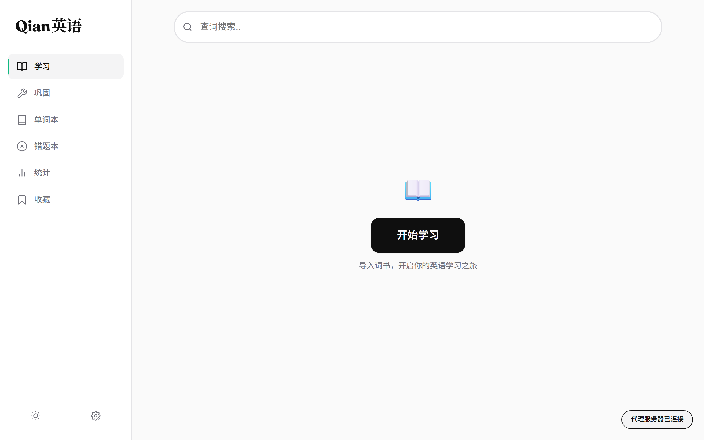
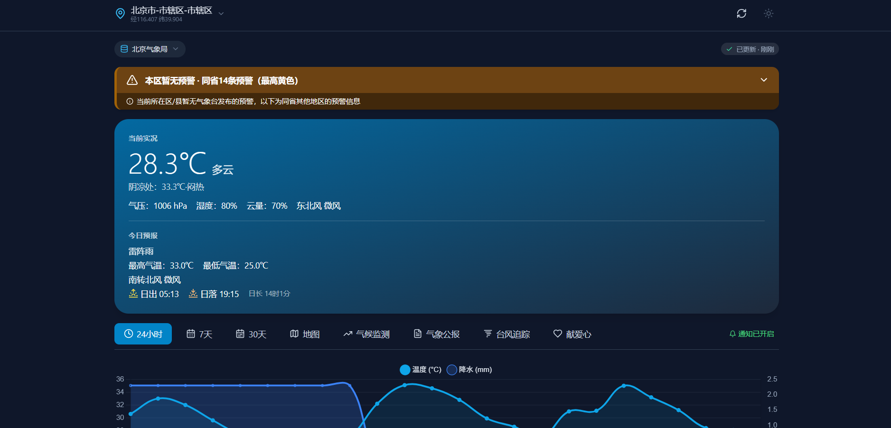
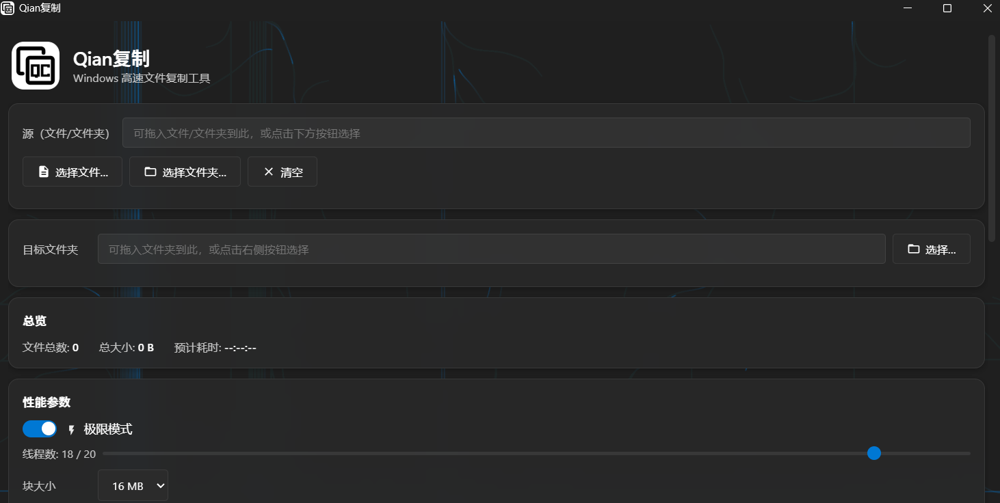
已上线
Qian复制
因为 Windows 自带复制校验过于复杂，多文件复制太慢，于是开发了 Qian 复制，也是 Qian 系列首款 Windows 可执行程序。
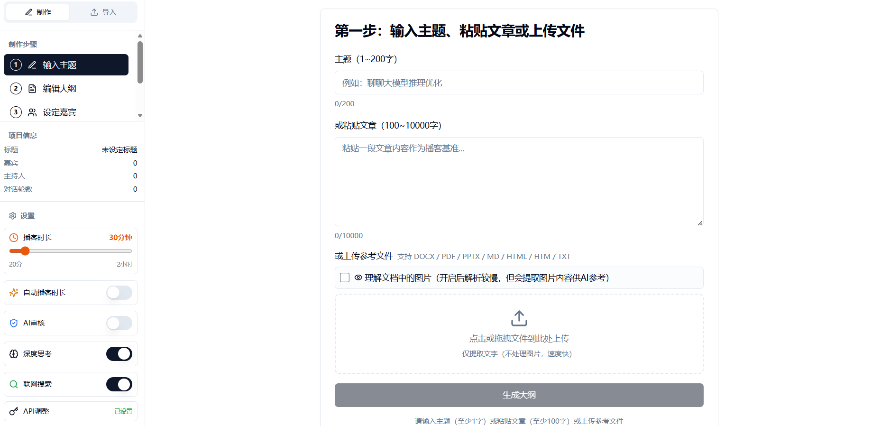
开发完毕-内测中
Qian播客
AI 一键生成播客的工作流网页版，具有独特的文件理解和思维链能力。
敬请期待
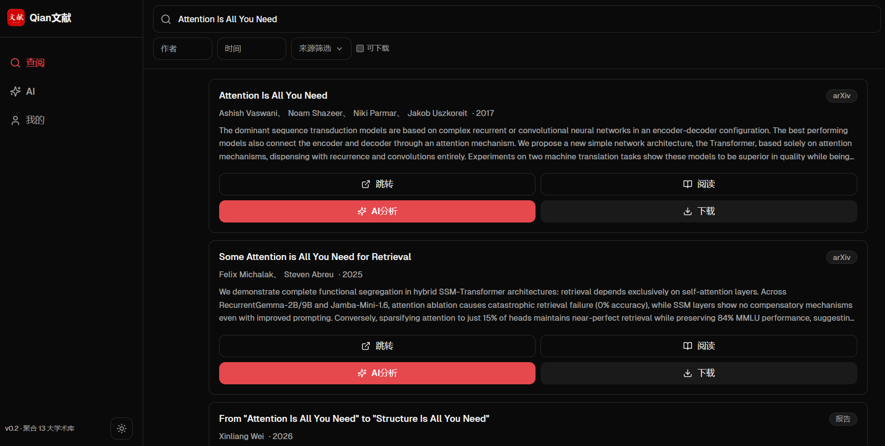
开发完毕-内测中
Qian文献
一站式文献查询，支持接入AI分析翻译等。
敬请期待
概念版开发中
QianOS
全兼容 AI 操作系统，让 AI 真正成为设备的底层能力，跨平台、跨设备无缝协同。
开发中
概念版开发中
Q语言
极快速编程语言，以最简语法与极致性能为目标，重新定义开发体验。
开发中HLBF
QianAI
等待HLBFAI框架成熟后开发（日程状态）
QianAI
基于HLBFAI框架开发的全新小模型，智力水平达到全方位研究生。
未开发实用小工具
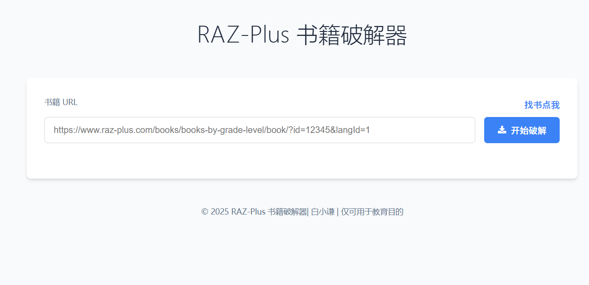
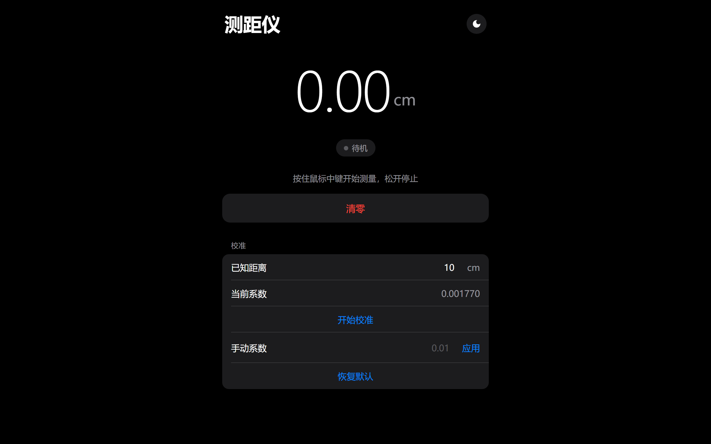
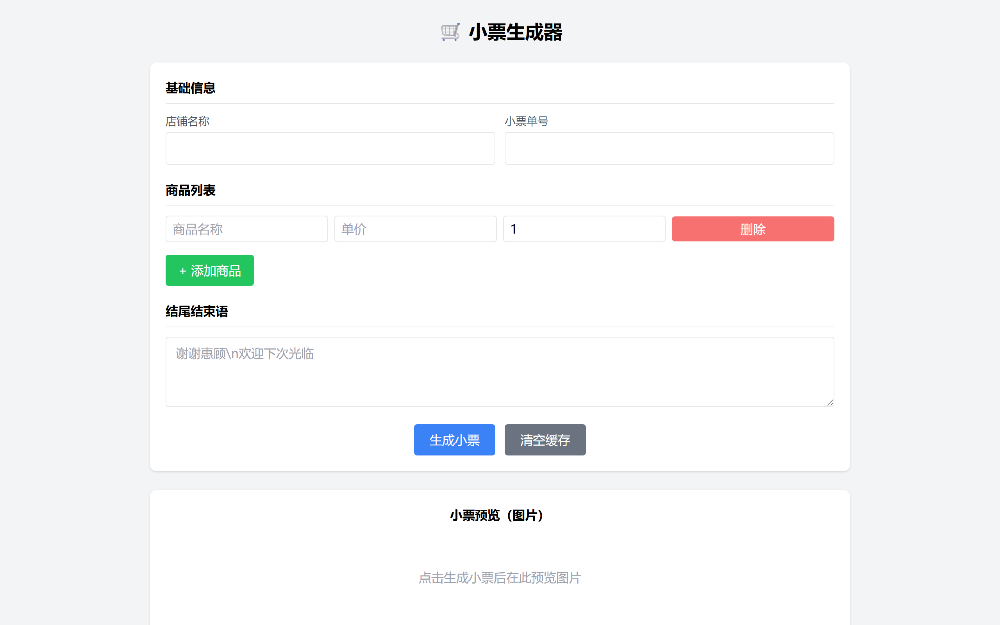
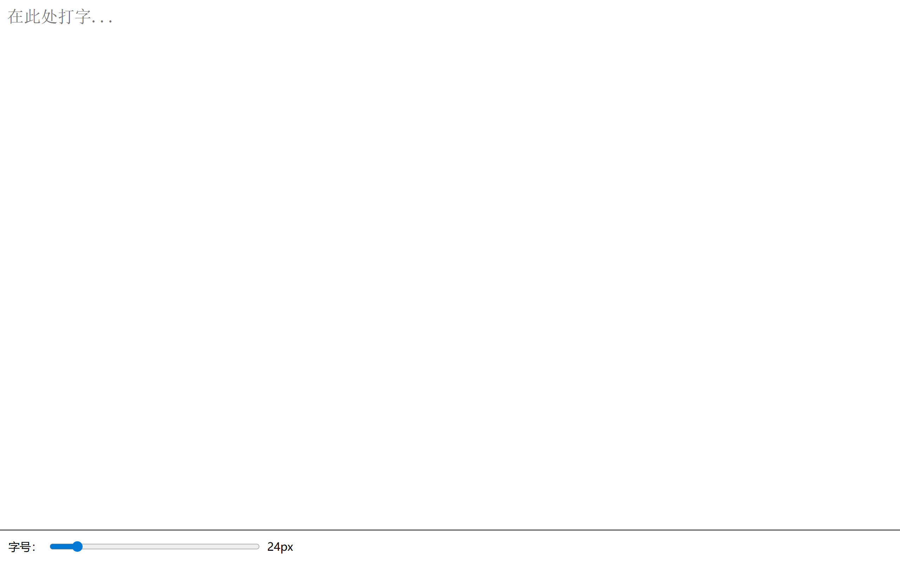
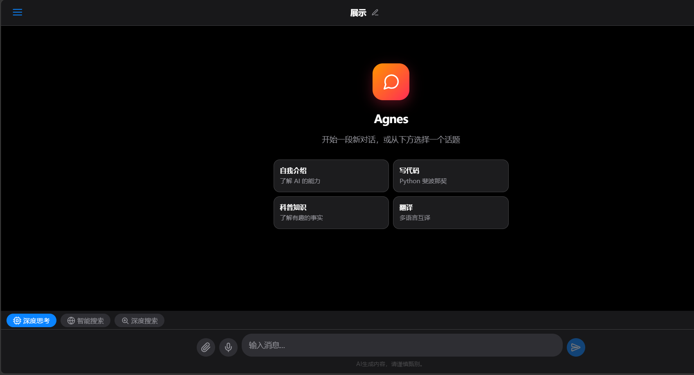
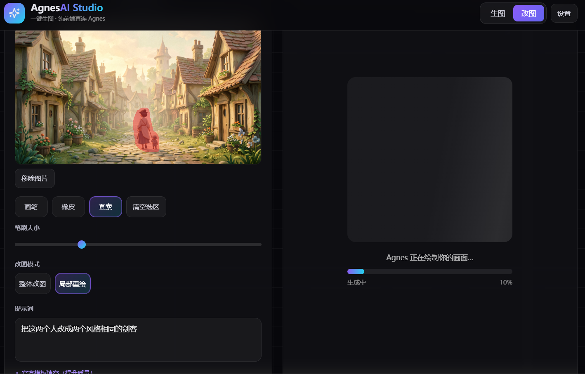
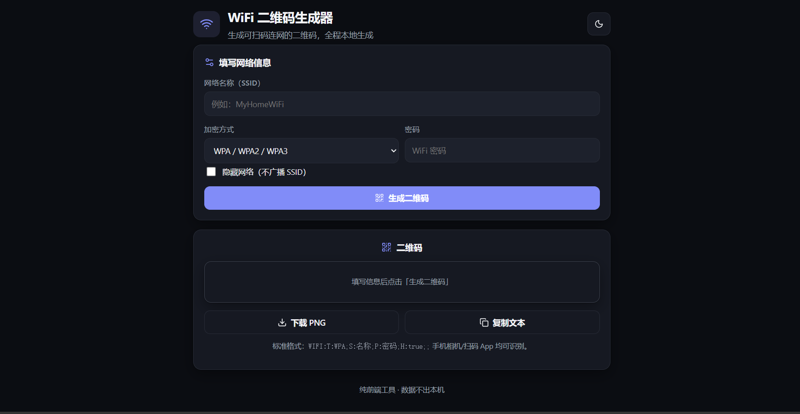